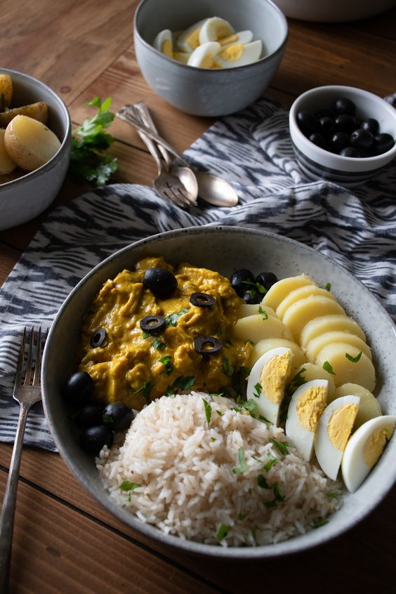

Aji de Gallina

Description
Aji de gallina, translated as “hen chili,” is a rich, creamy chicken stew
that has become one of the most iconic dishes in Peruvian cuisine. It
consists of pulled chicken simmered in a yellow sauce thickened with bread
or crackers, then garnished with boiled potatoes and hard-boiled eggs.
While early versions of the dish likely originated in small Peruvian
villages, it became popularized in the 17th and 18th centuries after
Spanish colonizers introduced dairy products like cheese to Peru. The
blending of Spanish and Andean ingredients created the distinctive
creaminess of modern aji de gallina.
Ingredients
- chicken
- bread
- milk
- onion
- garlic
- walnuts
- grated parmesan
- vegetable oil
- turmeric
- chicken stock
Steps
-
Poach the chicken (if making from scratch - see details in note 1 below)
then once cool enough to handle, shred it up. Alternatively, shred
leftover cooked chicken.
-
Soak the bread in the milk for a few minutes. Dice the onion in a small
dice and finely dice the garlic.
-
Put the soaked bread, walnuts and parmesan in a blender or food
processor and blend until smooth.
-
Warm the oil in a medium pan and add the onion. Cook a few minutes until
softened then add the garlic, aji amarillo and turmeric and cook a
minute more.
-
Add the bread-walnut mixture, the chicken and around ½ cup (120ml) of
cooking water from the chicken or stock. You can add a little more or
less to taste - it should be moist but not runny. Mix well and simmer
for around 10 minutes before serving.